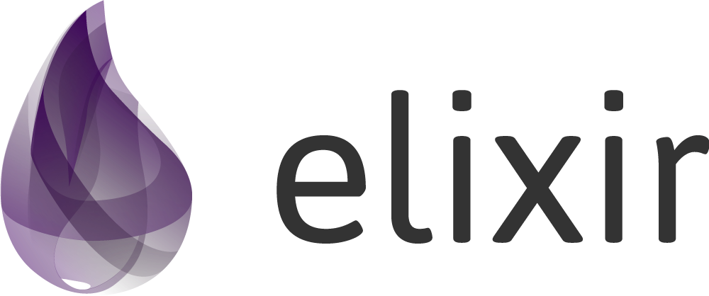

UNICID — Universidade Cidade de São Paulo
Paradigma Funcional · Elixir · glot.io
Seminário · Grupo 5 alunos
Use ← → ou clique em Anterior / Próximo

Grupo
Professor: Cid Rodrigues De Andrade
Disciplina: Paradigmas de Linguagens de Programação
Proposta
Percorrer e transformar uma estrutura aninhada semelhante a JSON — mapas dentro de mapas, listas dentro de mapas — com funções recursivas em Elixir.
Usar pattern matching sobre a estrutura, em vez de ifs explícitos checando o tipo de cada nó (is_map, typeof, etc.).
Uma cláusula para mapa, outra para lista, outra para folha — o runtime escolhe qual executar.
Paradigma
Como o funcional molda a solução da árvore JSON:
Uma árvore não tem tamanho fixo. Em vez de for / while mutando variáveis, cada função trata um nó e chama a si mesma nos filhos até chegar nas folhas.
Não alteramos o mapa original. Cada transformação devolve uma estrutura nova. Mesma entrada → mesma saída.
renomear_chaves, extrair_valores e achatar não dependem de estado global. Dá para compor: primeiro renomear, depois achatar.
O fluxo não é “perguntar o tipo e ramificar”. É declarar casos (mapa / lista / folha). A estrutura dos dados guia o algoritmo.
Árvore aninhada + transformação pura + matching por cláusula.
Linguagem
Recursos da linguagem que sustentam o percurso da árvore:
A mesma função (def) pode ter várias definições. A ordem importa: a primeira que casar é executada. Caso base fica por último.
when is_map(mapa) e when is_list(lista) restringem a cláusula. Não é um if no corpo — faz parte da assinatura do caso.
%{"chave" => valor} modela objeto; [...] modela array. Aninhamento é literal: mapa dentro de mapa, lista de mapas.
^chave_alvo força igualdade no matching (não cria variável nova). Enum.map / Enum.flat_map percorrem filhos sem loop mutável.
# Três cláusulas = três formas de nó — o runtime escolhe def renomear_chaves(mapa, regras) when is_map(mapa), do: ... # objeto def renomear_chaves(lista, regras) when is_list(lista), do: ... # array def renomear_chaves(valor, _regras), do: valor # folha (string, nº, bool…)
Conceito-chave
Matching sobre a estrutura, sem checagem explícita de tipo no meio do algoritmo:
if is_map(no) do tratar_mapa(no) else if is_list(no) do tratar_lista(no) else tratar_folha(no) end
Uma função só, ramificando com perguntas de tipo.
def f(no) when is_map(no), do: ... def f(no) when is_list(no), do: ... def f(no), do: ... # folha
Casos separados. O runtime escolhe a cláusula.
fn {^chave_alvo, valor} -> [valor | extrair_valores(valor, chave_alvo)] {_outra, valor} -> extrair_valores(valor, chave_alvo) end
O par {chave, valor} é desmontado; o pin ^ exige a chave certa.
if no meio do algoritmoModelo
%{
"usuario" => %{
"nome" => "Ana Silva",
"idade" => 28,
"contato" => %{
"email" => "ana@email.com",
"telefone" => "11999998888"
}
},
"pedidos" => [
%{"id" => 1, "produto" => "Livro", "preco" => 45.90},
%{"id" => 2, "produto" => "Caneta", "preco" => 3.50}
],
"ativo" => true
}
Mapas aninhados + lista de mapas — o mesmo formato mental de um JSON.
Função 1
Percorre a árvore; se a chave estiver no mapa de regras, troca o nome e continua nos filhos.
def renomear_chaves(mapa, regras) when is_map(mapa) do mapa |> Enum.map(fn {chave, valor} -> nova_chave = Map.get(regras, chave, chave) {nova_chave, renomear_chaves(valor, regras)} end) |> Map.new() end def renomear_chaves(lista, regras) when is_list(lista) do Enum.map(lista, fn item -> renomear_chaves(item, regras) end) end def renomear_chaves(valor, _regras), do: valor
Ex.: "nome" → "name", "usuario" → "user" em toda a estrutura.
Função 2
Coleta todos os valores de uma chave, em qualquer profundidade — inclusive dentro de listas.
def extrair_valores(mapa, chave_alvo) when is_map(mapa) do Enum.flat_map(mapa, fn {^chave_alvo, valor} -> [valor | extrair_valores(valor, chave_alvo)] {_outra, valor} -> extrair_valores(valor, chave_alvo) end) end def extrair_valores(lista, chave_alvo) when is_list(lista) do Enum.flat_map(lista, fn item -> extrair_valores(item, chave_alvo) end) end def extrair_valores(_valor, _chave_alvo), do: []
^chave_alvo (pin) exige igualdade no pattern matching do par chave/valor.
Função 3 · Ideia
Transforma a hierarquia em um mapa de um nível só: cada folha vira um par caminho → valor. O caminho guarda a “posição” na árvore original.
%{
"usuario" => %{
"nome" => "Ana Silva",
"contato" => %{
"email" => "ana@email.com"
}
},
"pedidos" => [
%{"preco" => 45.90},
%{"preco" => 3.50}
]
}
%{
"usuario.nome" => "Ana Silva",
"usuario.contato.email" => "ana@email.com",
"pedidos.0.preco" => 45.90,
"pedidos.1.preco" => 3.50
}
usuario → usuario.contato) e desce no valor0, 1…) no caminho, porque arrays não têm nome de chave[{prefixo_completo, valor}]; a recursão paraÚtil para inspecionar tudo de uma vez, serializar caminhos ou comparar estruturas sem navegar níveis à mão.
Função 3 · Implementação
def achatar(estrutura), do: achatar(estrutura, "") # API pública: prefixo vazio defp achatar(mapa, prefixo) when is_map(mapa) do mapa |> Enum.flat_map(fn {chave, valor} -> caminho = juntar_caminho(prefixo, to_string(chave)) achatar(valor, caminho) # desce com o caminho atualizado end) |> Map.new() end defp achatar(lista, prefixo) when is_list(lista) do lista |> Enum.with_index() # [{item, 0}, {item, 1}, …] |> Enum.flat_map(fn {item, indice} -> caminho = juntar_caminho(prefixo, Integer.to_string(indice)) achatar(item, caminho) end) |> Map.new() end defp achatar(valor, prefixo), do: [{prefixo, valor}] # folha defp juntar_caminho("", chave), do: chave defp juntar_caminho(prefixo, chave), do: prefixo <> "." <> chave
flat_map?Cada filho devolve uma lista de pares. flat_map junta tudo numa lista só antes do Map.new.
Três cláusulas privadas + helper: mapa, lista e folha — o mesmo padrão das outras funções.
Mecanismo
A forma dos dados define o fluxo — o mesmo espírito de “declarar regras” do paradigma funcional.
Aplicação no Mundo Real
Logs de segurança (AWS, Cloudflare e firewalls) chegam em JSONs profundamente aninhados. Ferramentas como Splunk e Elastic requerem dados planos para indexação e buscas de altíssima velocidade.
"rede.origem.ip" => "192.168.0.1"
Em um incidente, o analista precisa extrair todos os endereços IP ou hashes de arquivos de um grande volume de logs, sem depender da subpasta ou sublista onde foram armazenados.
extrair_valores(logs, "ip_destino")
Aplicação no Mundo Real
Sistemas legados e APIs modernas usam nomes diferentes para o mesmo campo — EmployeeName, nome_func ou User_Name. Renomear padroniza o JSON recebido antes de enviá-lo ao banco de dados.
"EmployeeName" => "nome"
Valores sensíveis podem ser ocultados em qualquer nível da árvore. O algoritmo recursivo encontra chaves como "senha" ou "cartao" e substitui o conteúdo antes de expor a API.
"cartao" => "***"
Demonstração
transformador.exsrenomear_chaves[45.9, 3.5] ao extrair "preco"usuario.contato.email, etc.Visão de paradigmas
instanceof / typeof / ifsA diferença prática: descrever a estrutura e deixar o matching decidir o caminho.
Fechamento
Obrigado
Transformador de estrutura tipo JSON
transformador.exs — código para glot.ioapresentacao.html — estes slidesReferências: documentação Elixir (maps, Enum, pattern matching) · “Programming Elixir” (Dave Thomas)